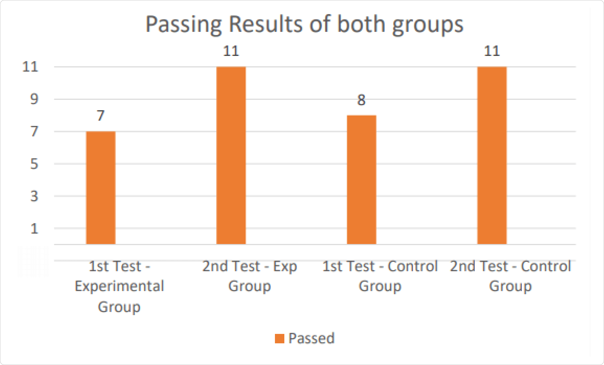

BACKGROUND As a part of my Master's Thesis, I developed
a car-driving VR simulator with the aim of educating novice drivers on the intricacies of road rules and regulations.
The game offers players an immersive experience within a virtual reality environment. Its objective is to provide a simulated road test, enabling players to familiarize themselves with driving rules and regulations. Through audio and visual feedback, the game alerts players to any mistakes they make and offers a comprehensive assessment of their performance, determining whether they pass or fail the test. To evaluate the effectiveness of the simulator compared to the DMV drivers manual, I conducted A/B testing.
 The user interface of the simulator comprises 10 tasks, visually generated alerts, visually generated feedback, a speedometer, and a minimap. Based on the player's level of accuracy, the simulator will provide notification of their pass or fail status in the test.
The project was created utilizing the Unity game engine, C#, Photoshop, and Maya3D. User experience (UX) research was conducted through the utilization of Google Docs and Microsoft Excel. The objective of this project was to familiarize users with driving rules and regulations, as well as to cultivate their understanding of the repercussions associated with reckless and unsafe driving. At present, users have the ability to engage with the game on both Cardboard and Oculus VR systems.
To play the game currently available on this webpage, a VR headset is not required. However, if you are interested in testing the VR version of the game, kindly send a request to me via email.
The user interface of the simulator comprises 10 tasks, visually generated alerts, visually generated feedback, a speedometer, and a minimap. Based on the player's level of accuracy, the simulator will provide notification of their pass or fail status in the test.
The project was created utilizing the Unity game engine, C#, Photoshop, and Maya3D. User experience (UX) research was conducted through the utilization of Google Docs and Microsoft Excel. The objective of this project was to familiarize users with driving rules and regulations, as well as to cultivate their understanding of the repercussions associated with reckless and unsafe driving. At present, users have the ability to engage with the game on both Cardboard and Oculus VR systems.
To play the game currently available on this webpage, a VR headset is not required. However, if you are interested in testing the VR version of the game, kindly send a request to me via email.
The user interface of the simulator comprises 10 tasks, visually generated alerts, visually generated feedback, a speedometer, and a minimap. Based on the player's level of accuracy, the simulator will provide notification of their pass or fail status in the test.
The project was created utilizing the Unity game engine, C#, Photoshop, and Maya3D. User experience (UX) research was conducted through the utilization of Google Docs and Microsoft Excel. The objective of this project was to familiarize users with driving rules and regulations, as well as to cultivate their understanding of the repercussions associated with reckless and unsafe driving. At present, users have the ability to engage with the game on both Cardboard and Oculus VR systems.
To play the game currently available on this webpage, a VR headset is not required. However, if you are interested in testing the VR version of the game, kindly send a request to me via email.
THE PROBLEM Learning driving rules and regulations through the driver's manual can be a lengthy, exhausting, and tedious process. As a result, many users struggle and fail their initial driver's exams, necessitating a need for re-examination.
THE SOLUTION I designed and developed an immersive VR
game that offers audio/visual feedback and alerts, along with a user interface for real-time scoring. This scoring system enables users to easily recognize their mistakes and learn from them.
MY ROLE As the project's author and creator, I took on the responsibilities of designing, developing, and conducting systematic UX research. This involved tasks such as brainstorming, programming, A/B testing, user surveys, user interviews, and usability testing.

MY APPROACH
UX Research

The is the alpha version of the product, which was developed based on previous usability testing and feedback sessions. It includes a fully-realized game with scenarios depicting both successful and unsuccessful outcomes, accompanied by feedback. This version served as the foundation for conducting extensive quantitative research. Play Video: You can view the source code here: Click here
QUANTITATIVE RESEARCH
I conducted usability testing with a group of 70 users, which provided valuable insights and constructive feedback. These findings helped identify areas for improvement and additional requirements to ensure the product's viability and usefulness.
I finalized the game version and proceeded to conduct A/B testing with 22 users. The objective was to assess the effectiveness of the simulator in comparison to the manual for learning road rules and regulations.
The participants in this study were non-drivers, divided into two groups: the control group and the experimental group. The control group consisted of eleven users, while the remaining eleven users were assigned to the experimental group.
Throughout the user-testing phase, participants from both the control and experimental groups were requested to take a learner's driving quiz test. The quiz format closely resembled the actual learner's driving test format, featuring similar types of questions.
Take the QUIZ!!!
 The question above is related to HOV lane and users have to select the correct answer. Similarly,
within the game, the user is alerted about HOV zone and they are not allowed to drive in that
particular zone as show below:
The question above is related to HOV lane and users have to select the correct answer. Similarly,
within the game, the user is alerted about HOV zone and they are not allowed to drive in that
particular zone as show below:
 Eleven individuals from the experimental group participated in the aforementioned quiz test. Subsequently, following the completion of the test, they were instructed to engage in the VR game. Upon finishing the game, the participants were once again requested to undertake the identical quiz.
Similar to the experimental group, eleven individuals from the control group also took part in the quiz test. Subsequent to completing the test, they were instructed to read the RMV manual, which contained the answers to all the quiz questions. Following the manual reading, they were instructed to retake the quiz test. It was observed that they were able to correctly assess the answers to the provided questions in the test.
Unfortunately, due to limitations, it was not feasible for me to incorporate all the questions from the manual into the game. As a result, I had to narrow down the project's scope. Consequently, I provided the users with only a select few pages of the RMV manual, aiming to keep the scope concise. This approach enabled the users to concentrate on the answers within a shorter timeframe.
Eleven individuals from the experimental group participated in the aforementioned quiz test. Subsequently, following the completion of the test, they were instructed to engage in the VR game. Upon finishing the game, the participants were once again requested to undertake the identical quiz.
Similar to the experimental group, eleven individuals from the control group also took part in the quiz test. Subsequent to completing the test, they were instructed to read the RMV manual, which contained the answers to all the quiz questions. Following the manual reading, they were instructed to retake the quiz test. It was observed that they were able to correctly assess the answers to the provided questions in the test.
Unfortunately, due to limitations, it was not feasible for me to incorporate all the questions from the manual into the game. As a result, I had to narrow down the project's scope. Consequently, I provided the users with only a select few pages of the RMV manual, aiming to keep the scope concise. This approach enabled the users to concentrate on the answers within a shorter timeframe.
FINAL RESULT Both groups of users participated in the initial quiz test. The results revealed that four users from the experimental group and three users from the control group did not pass the test. Subsequently, I conducted user testing by assigning each group their respective tasks. The experimental group was instructed to engage with the simulator, while the control group was asked to read the RMV manual. Following the completion of their tasks, users from both groups took the quiz test for the second time. Notably, it was observed that users demonstrated improved performance and were able to pass the test after learning from both the game and the manual.

In order to analyze, address, and enhance the issues with the game, I conducted user interviews and surveys. Presented below are the post-survey questions that were posed to the users following the test.
 Below is the Post-Test survey outcome (positive feedbacks):
Below is the Post-Test survey outcome (positive feedbacks):